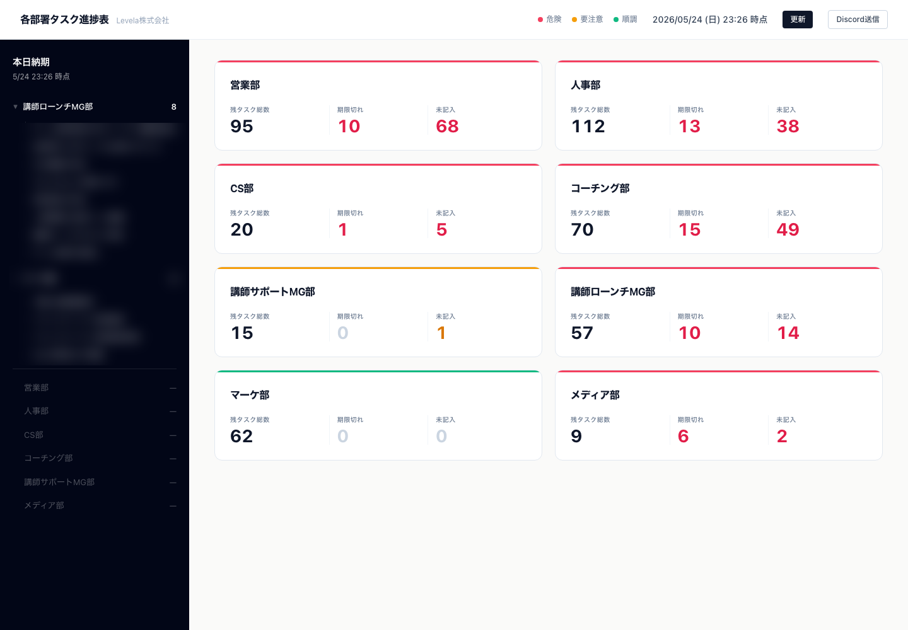

バッジや危険ラベルなどの装飾を排除し、カード上部の3pxアクセントカラーだけで状態を伝える。 「○○部大丈夫？」と聞かれた時に5秒で答えられることをゴールに置いた。
TOPは横断ステータスのみ、詳細は各部署のNotionページに任せる役割分担。 「本日納期」だけは今日の行動に直結するため例外として左サイドバーに切り出した。
API連携の前に何度もモックHTMLでデザインを固めた。 その後サブエージェントでUI/UX観点とエンジニア観点の2軸レビューを実施し、サブタスク二重カウント等のロジック不備を洗い出した。
期限切れ・未記入の判定や日付計算はAIに毎回問わせず、純粋なJavaScriptロジックで実装。 AIの揺らぎが入る余地をなくし、毎回同じ集計結果が出るようにした。